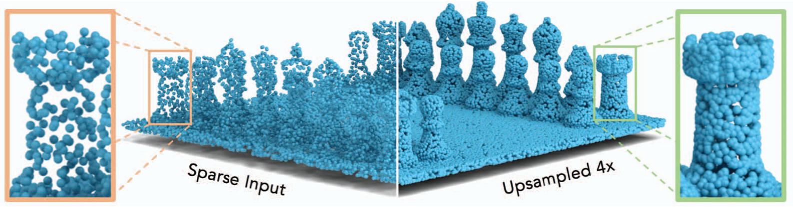
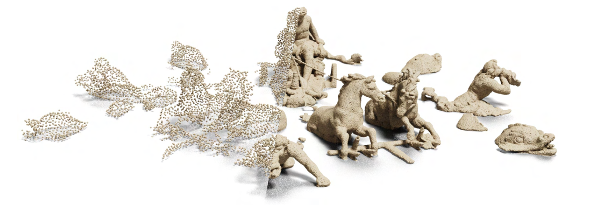

I’m Akash Kumbar, a M.S. by Research student and Graduate Student Researcher at the Robotics Research Center, IIIT Hyderabad, advised by Prof. Madhava Krishna.
My research focuses on 3D computer vision, representation learning, and autonomous robotics. I develop systems that help robots perceive, reconstruct, and explore real-world environments.
Previously, I studied Electronics and Communication Engineering at KLE Technological University and worked on point-cloud upsampling at the Center of Excellence in Visual Intelligence. This work resulted in two papers at the ICCV 2023 Workshops.
Outside research, I train in mixed martial arts and hold a black belt in karate. I also enjoy running and am currently training for a half marathon.
Updates
- Jun 06, 2026 Our work Beyond-Frontiers: Scene-Anomaly Guided Autonomous Exploration has been accepted in IROS 2026.
- Jun 25, 2025 Our work Leveraging 2D Priors and SDF Guidance for Urban Scene Rendering 🚗 has been accepted in ICCV 2025 🎊
- Jul 30, 2024 I started my Master's (by Research) at RRC, IIIT Hyderabad under the guidance of Prof. Madhava Krishna.
- Aug 08, 2023 Our work ASUR3D: Arbitrary Scale Upsampling and Refinement of 3D Point Clouds has been accepted in ICCVW 2023.
- Aug 07, 2023 Our work TP-NoDe: Topology-Aware Progressive Noising and Denoising of Point Clouds Towards Upsampling has been accepted in ICCVW 2023.
Research
* indicates equal contribution
 Beyond Frontiers: Scene-Anomaly Guided Autonomous Exploration
Beyond Frontiers: Scene-Anomaly Guided Autonomous Exploration
Akash Kumbar, Abhinav Raundhal, Madhava Krishna
Proceedings of the 2026 IEEE/RSJ International Conference on Intelligent Robots and Systems (IROS 2026)
Project Page •
ArXiv
 Leveraging 2D Priors and SDF Guidance for Dynamic Urban Scene Rendering
Leveraging 2D Priors and SDF Guidance for Dynamic Urban Scene Rendering
Siddharth Tourani, Jayaram Reddy, Akash Kumbar, Satyajit Tourani, Nishant Goyal, Madhava Krishna, N Dinesh Reddy, Muhammad Haris Khan
Proceedings of the IEEE/CVF International Conference on Computer Vision (ICCV), 2025
Project Page •
Proceedings •
ArXiv

TP-NoDe: Topology-Aware Progressive Noising and Denoising of Point Clouds Towards Upsampling
Akash Kumbar*, Tejas Anvekar*, Tulasi Amitha Vikrama, Ramesh Ashok Tabib, Uma Mudenagudi
Proceedings of the IEEE/CVF International Conference on Computer Vision (ICCV) Workshops, 2023
Proceedings

ASUR3D: Arbitrary Scale Upsampling and Refinement of 3D Point Clouds Using Local Occupancy Fields
Akash Kumbar, Tejas Anvekar, Ramesh Ashok Tabib, Uma Mudenagudi
Proceedings of the IEEE/CVF International Conference on Computer Vision (ICCV) Workshops, 2023
Proceedings
Teaching & Service
Teaching Assistant, Mobile Robotics — IIIT Hyderabad, Monsoon 2026
Mentoring students, supporting course instruction, designing projects and assignments, and grading coursework.
Instructor, RRC Summer School — IIIT Hyderabad, 2025–2026
Taught deep learning for 3D vision, neural representations, and explicit scene representations, including 3D Gaussian Splatting. 2026 lecture
Reviewer, IROS 2026 Workshop(The name of the workshop will be made public after proceedings)
Reviewing submissions for a workshop at IROS 2026.
Projects
A selection of my work in computer vision, deep learning, and robotics.
 ARROU: Adversarially Robust Rank-One Unlearning
Targeted LLM unlearning through latent adversarial training and localized rank-one model editing
View project →
MAST3R-SLAM
Camera-pose extraction and 3D scene reconstruction from point clouds and images
View project →
ARROU: Adversarially Robust Rank-One Unlearning
Targeted LLM unlearning through latent adversarial training and localized rank-one model editing
View project →
MAST3R-SLAM
Camera-pose extraction and 3D scene reconstruction from point clouds and images
View project →
 Camera-Based Vehicle Functions
Completed as a part of Bosch's PRIXEL program
View project →
Camera-Based Vehicle Functions
Completed as a part of Bosch's PRIXEL program
View project →
Template borrowed from Cheng Chi's personal page